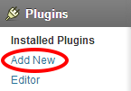
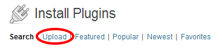
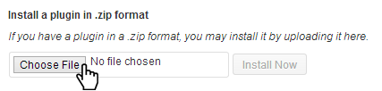
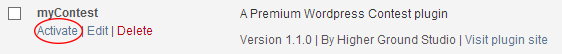
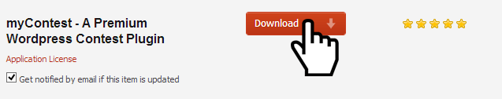
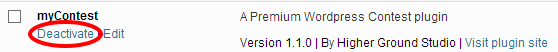
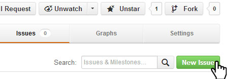

Welcome the the docs of myContest! Thank you for your purchase. Please remember to give myContest a 5 star rating!
Prerequisites
Wordpress 3.00+
PHP 5.1.0+
Install
Using ZIP
From the WordPress plugin menu click Add New
2
Click on Upload.

Use the browse button to select the myContest zip file you downloaded from Codecanyon, then click on Install Now.

The plugin will be uploaded to your blog and installed.
Go to Plugins screen and find the myContest Plugin in the list.
Click Activate to activate myContest.

Using FTP
Download myContest from Codecanyon.

Extract the myContest folder.
With your favorite FTP program, upload the myContest folder to the wp-content/plugins folder in your WordPress directory online.
Go to Plugins screen and find the myContest Plugin in the list.
Click Activate to activate it.
Working with Contests
This screencast covers all of the Working with Contests sections.
Create a Contest
Go to myContest -> Add New Constest on the Wordpress admin menu.
Fill this in like any other post with your title, content, and any other settings that you want.
Then add your entries.
Add entry
Click the Add New Entry Button on the left when you are on the Contest post edit page.
Delete entry
Click the delete icon on the top right of the entry. A confirmation dialog box will appear asking you confirm the delete.
The entry will not actually be deleted until you save or update the contest post.
Re-order entries
Click and hold the move icon on the top right of the entry.
Save contest
Click save or update in the Publish postbox on the right.
Field Definitions
Author - The author of the entry
Title - The title of the entry
Url - The url of the entry (displays as the title link)
Votes - Number of votes for the entry (can be changed by using the arrows on the right or directly entering the number)
Settings
The can access all the settings by using the tabs.
General
Sort Entries - You can select to sort by highest votes first, lowest vote first, alphabetically by the title, reverse alphabetically by the title, alphabetically by the author, reverse alphabetically by the author, random, or not to sort at all.
This sorting will not reflect on the admin post page and will only reflect on the actual contest itself.
Stick this to the front page - If checked, the post will be placed at the top of the front page of posts, keeping it there until new posts are published. This is the same as a sticky post.
Do not show number of votes - If checked, the number of votes will not show on this contest. Rather, it will say "Vote for this".
Voting Start
Voting Starts on (UTC) - This the date and time that the contest will start (in UTC).
Select the date input box. A calendar widget will come up that you can select from. You can also input directly using month/day/year (05/02/2013)
Input the hours (24 hour format).
Input the minutes.
If hours or minutes are not entered it default to midnight.
Text to display before voting starts - This is the text to display before voting starts. If the do not show entries before voting starts is checked, this will be the only thing displayed other than the content. HTML is allowed.
Do not show entries before voting starts - Entries will not show until the contest starts.
Voting End
Voting ends on (UTC) - This the date and time that the contest will end (in UTC).
Select the date input box. A calendar widget will come up that you can select from. You can also input directly using month/day/year (05/02/2013)
Input the hours (24 hour format).
Input the minutes.
If hours or minutes are not entered it default to midnight.
Text to display after voting ends - This is the text to display after voting ends. If the do not show entries after voting ends is checked, this will be the only thing displayed other than the content. HTML is allowed.
Do not show entries after voting ends - Entries will not show after the contest ends.
Show top ___ entries after voting ends - This will show only the top entered number of entries (ordered by highest votes first). Make sure that Do not show entries after voting ends is not checked to use this setting.
CSS/SASS
Minify CSS
To turn on or off the loading of minified CSS
Go to the myContest plugin folder
Open myContest.php in your favorite editor
To turn on: make sure the css_min constant is like so:
const css_min = true;
To turn off: make sure the css_min constant is like so:
const css_min = false;
Custom CSS
To use custom css that will not be overwritten follow these steps:
Go to the myContest folder
Go to /inc/stylesheets/ folder
Copy and paste the myContest.css
Rename the copy to myContest.custom.css
To use a minified version of the mycontest custom css, create a myContest.custom.min.css and turn css minify on.
SASS and Compass
myContest was created with SASS and Compass. It is completely your choice if you want to use SASS to change the CSS. You can just change the CSS directly and forget about the SASS all together as it is just a css pre-processor (more like a CSS shortcut).
To learn more about SASS check out the netuts+ mini series, Mastering SASS.
Javascript
Enable/Disable Minified JS
To turn on or off the loading of minified javascript files
Go to the myContest plugin folder
Open myContest.php in your favorite editor
To turn on:
make sure the js_min constant is like so:
const js_min = true;
To turn off: make sure the js_min constant is like so:
const js_min = false;
To turn on or off the loading of minified javascript files
Go to the myContest plugin folder
Open myContest.php in your favorite editor
To turn on:
make sure the js_min constant is like so:
const js_min = true;
To turn off: make sure the js_min constant is like so:
Go to codecanyon.net/downloads and select Get notified by email if this item is updated under myContest. This will let you know if a update has been uploaded to Codecanyon.
Go to Plugins screen and find the myContest Plugin in the list.
Click Deactivate to deactivate myContest.

With your favorite FTP program, upload the myContest folder to the wp-content/plugins folder in your WordPress directory online.
Go to Plugins screen and find the myContest Plugin in the list.
Click Activate to activate it.
Have a problem or need more help?

Visit the myContest Issue board. Click the New Issue button to create a new issue. You can
also search for other issues and many times there may be a solution already.
You must sign up for a free Github account to post a new issue.
Advanced
Many of the topics below will be programmically inclined and may require some understanding of PHP or Javascript.